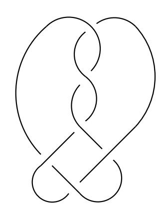

Jacob Guynee · Georgia Institute of Technology
Student Topology Seminar · April 8, 2026
Problem: Describe the ways in which $M^3$ fibers over $S^1$
Equivalently: Which $\phi \in H^1(M;\,\mathbb{Z})$ are induced by a fibration $M \to S^1$?
A computational tool for the Thurston norm

$L = 6_2^2$
Recall: $H^1(M;\,\mathbb{R}) \cong H_2(M,\,\partial M;\,\mathbb{R})$
"Minimal complexity of a dual surface"
$\alpha = (1,0)$
$\beta = (1,2)$
$t_1 \mapsto x,\; t_2 \mapsto 1$
$t_1 \mapsto x,\; t_2 \mapsto x^2$
$\alpha(\Delta_N) = x^{-1} + 1 + x$
$\beta(\Delta_N) = x^4 + x^3 - x^2 + x + 1$
$\|\alpha\|_A = 2$
$\|\beta\|_A = 4$
$L = 6_2^2$